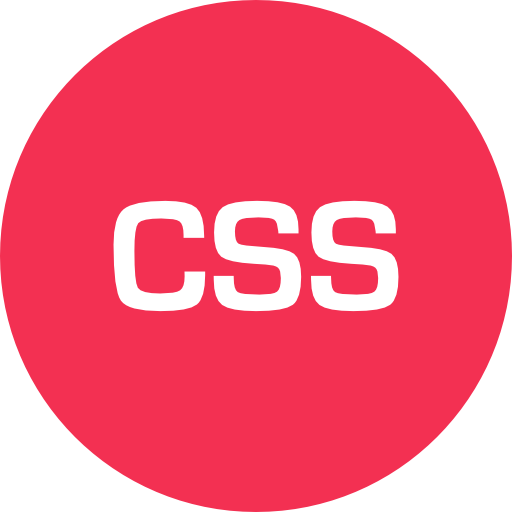
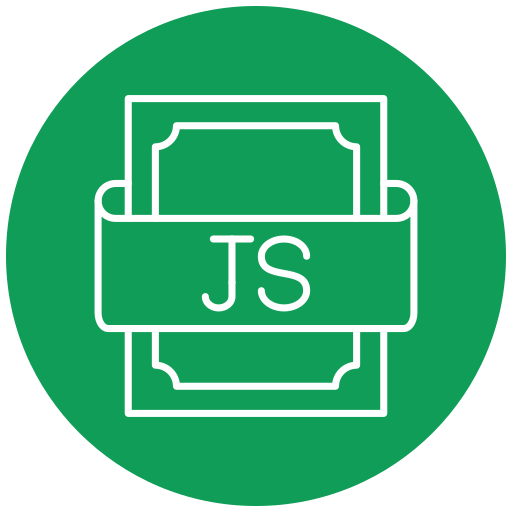

Ivny
Metzker
Desenvolvedora Front-End


Ivny
Metzker
Desenvolvedora Front-End


Olá! me chamo Ivny Metzker, sou de Teófilo Otoni - MG, tenho 26 anos e em breve serei formada em Engenharia de Software pela instituição de ensino UNOPAR.
Sou apaixonada por tecnologia e principalmente pela área de desenvolvimento web, hoje tenho o sonho de conquistar minha primeira oportunidade como estagiária.


